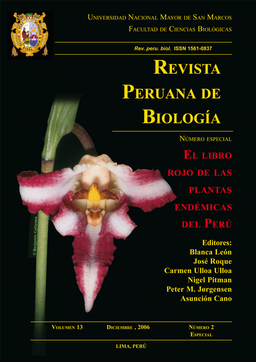
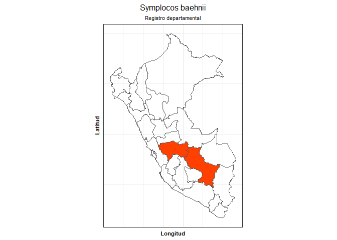

ppendemic 
…El libro rojo de las plantas endémicas del Perú constituye, en este aspecto una herramienta fundamental para determinar las medidas necesarias para la conservación de la flora peruana. - Kember Mejía Carhuanca
The goal of ppendemic is to provide access to The red book of endemic plants of Peru data.
Installation:
You can install:
the most recent officially-released version from CRAN with:
install.packages("ppendemic")the latest development version from GitHub with:
# install.packages("remotes")
remotes::install_github("PaulESantos/ppendemic")About the data
Data were published and made available by the Revista Peruana de Biología in volume 13 and number 2 available here, on 2006. Edited by Blanca León et al.
Examples:
pep_check, the basic function of ppendemic:
The function can be executed on a vector with the names of the species to be verified.
spp <- c("Clethra cuneata", "Miconia setulosa", "Weinmannia fagaroides", "Symplocos quitensis", "Miconia alpina", "Persea ruizii", "Myrsine andina", "Symplocos baehnii", "Polylepis pauta")
pep_check(spp)
#> [1] "not endemic" "not endemic" "not endemic" "not endemic" "endemic"
#> [6] "not endemic" "not endemic" "endemic" "not endemic"Or in a tibble variable:
df <- tibble::tibble(sppe = c("Clethra cuneata", "Miconia setulosa",
"Weinmannia fagaroides", "Symplocos quitensis",
"Miconia alpina", "Persea ruizii",
"Myrsine andina", "Symplocos baehnii",
"Polylepis pauta"))
df
#> # A tibble: 9 x 1
#> sppe
#> <chr>
#> 1 Clethra cuneata
#> 2 Miconia setulosa
#> 3 Weinmannia fagaroides
#> 4 Symplocos quitensis
#> 5 Miconia alpina
#> 6 Persea ruizii
#> 7 Myrsine andina
#> 8 Symplocos baehnii
#> 9 Polylepis pauta
df %>%
mutate(endemic = pep_check(sppe))
#> # A tibble: 9 x 2
#> sppe endemic
#> <chr> <chr>
#> 1 Clethra cuneata not endemic
#> 2 Miconia setulosa not endemic
#> 3 Weinmannia fagaroides not endemic
#> 4 Symplocos quitensis not endemic
#> 5 Miconia alpina endemic
#> 6 Persea ruizii not endemic
#> 7 Myrsine andina not endemic
#> 8 Symplocos baehnii endemic
#> 9 Polylepis pauta not endemicYou can check the region where the endemic species are registered with pep_regdep function:
pep_regdep("Miconia alpina")
#> # A tibble: 1 x 2
#> accepted_name registro_dep
#> <chr> <chr>
#> 1 Miconia alpina Áncash-Apurímac-Cusco-Huánucoand build a map with pep_regdep_map():
pep_regdep_map("Miconia alpina")
Citation
To cite the ppendemic package, please use:
citation("ppendemic")
#>
#> To cite ppendemic in publications use:
#>
#> Santos-Andrade PE, Vilca-Bustamante LL (2021). ppendemic: The red
#> book of endemic plants of Peru data. R package version 0.1.1.
#>
#> A BibTeX entry for LaTeX users is
#>
#> @Manual{,
#> title = {ppendemic: The red book of endemic plants of Peru data},
#> author = {Paul Efren Santos Andrade and Lucely L. Vilca Bustamante},
#> year = {2021},
#> note = {R package version 0.1.1},
#> url = {https://github.com/PaulESantos/ppendemic},
#> }References
Data originally published in:
- León, B., J. Roque, C. Ulloa Ulloa, N. C. A. Pitman, P. M. Jørgensen & A. Cano Echevarría. 2006 2007. El Libro Rojo de las Plantas Endémicas del Perú. Revista Peruana Biol. 13(núm. 2 especial): 1s–971s.Here